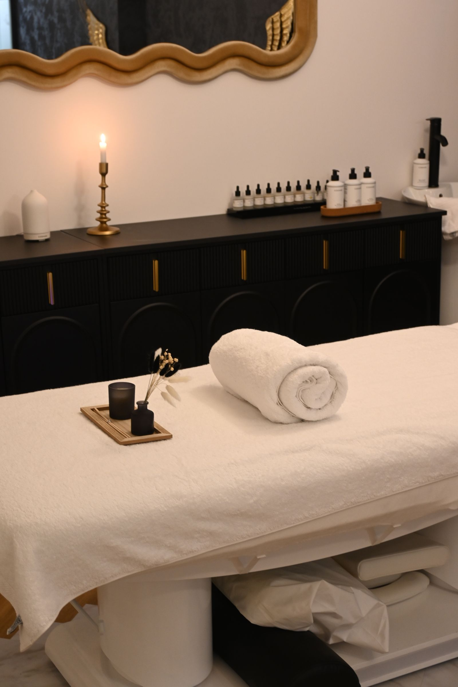

01
Toxina botulínica (Botox)
Planejamento individual para suavizar linhas de expressão e preservar a naturalidade.
Saiba mais ↗Cuidado individualizado, naturalidade e atenção aos detalhes. Uma experiência pensada para você, do primeiro atendimento ao acompanhamento.
Conheça os principais procedimentos realizados. A indicação e o protocolo são definidos após uma avaliação individual.
Planejamento individual para suavizar linhas de expressão e preservar a naturalidade.
Saiba mais ↗
Contorno e volume labial planejados conforme suas proporções e objetivos.
Saiba mais ↗

Higienização profunda e cuidado definidos de acordo com as necessidades da pele.
Saiba mais ↗
Protocolo voltado à renovação da pele, planejado de forma individual.
Saiba mais ↗

Acompanhamento dermatofuncional conforme as necessidades de cada recuperação.
Saiba mais ↗Imagens ilustrativas. A indicação de cada procedimento depende de avaliação individual.

Nossa proposta é valorizar sua beleza com cuidado estético individualizado, respeitando as características e necessidades de cada pessoa.
Conheça os procedimentos, converse sobre seus objetivos e descubra as possibilidades de cuidado em uma avaliação.
CUIDADO, NATURALIDADE E BEM-ESTARVamos conversar ↗Inspirações de cuidado e bem-estar. Imagens ilustrativas para conhecer o universo da estética e do autocuidado.
Fotos ilustrativas do Pexels. Não representam a equipe, os pacientes ou resultados da clínica.
Explore os procedimentos ↗Os canais de agendamento serão divulgados em breve nesta página.
As informações sobre o local de atendimento serão divulgadas junto aos canais de contato.
A indicação depende de avaliação individual, histórico de saúde e objetivos. Converse com um profissional habilitado sobre riscos, contraindicações e cuidados.
Conheça as possibilidades de cuidado. Os canais de agendamento serão divulgados em breve.
Agendar avaliação